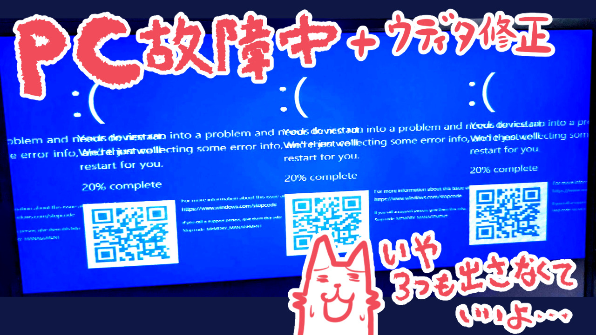

| ということで引き続きウディタ修正をしながらの日々ですが、ようやくバグのご報告数も減ってきました！ 単純にみなさま4月からの新生活でお忙しいだけかもしれませんが！
ちなみに私はこの季節、非常に体調不良気味で毎日ゲッソリです。なので「バグ修正だけでも何とかゆっくりやってこう……」と思ってた矢先、大事件が！
◆さよならマイPC 私だけでなくパソコンまでもがここまでの旅で耐えきれなくなったのか、ついに愛機が故障してしまいました。  なぜか3つに分身したエラー画面が出たり、その後セーフモードでもUSB起動ドライブ使っても起動後数十秒でダウンしまくるようになったりして「これはGPU周りがおかしいのでは？」といった推測は出ましたが、結局BIOSをいじりまくってもまともな起動までたどり着けず、最終的にSSDを抜いて眠りにつかせることになりました（ちなみに私がいつも使うのはノートPCです、生き残ったまま引退できた旧マシンがあればイベント展示用や古い環境の検証用に使えますからね！） これまでもパソコンはときどきクラッシュしていましたが、忙しくてあまり気にすることができず、「ときどき急なクラッシュして不安定だからWindows11を再インストールしたけど、まだたまに落ちるなあ～？ うーん？」とか言ってました。普通に考えればそれはハードウェア不調ですよ！ その可能性にまじめに向き合っていればもっと早く新しいパソコンの調達をし始めてスムーズに移行できたのに！ と思いつつも、ウディタの次のバグをどう直すかで頭いっぱいだった私にはそんな余裕は持てなかったのでした。 なおバックアップはかなり高頻度で取るようにしているので『ウディタのソースコード』や作りかけの『片道勇者2』などのデータは問題ありません！ これまで何度もデータを吹っ飛ばして悲しい思いをしたからこそ、バックアップの大切さとありがたみは身に染みておりますとも！ 私が「データ回収しなきゃ～！」と言ってるときはもっぱら、ラスト1～2日の作業内容の回収のことを指しています。 そういうわけでしばらくメイン機なしとなり、まだなんとか動く昔のオンボロPCを引っ張り出してきてデータ移行して作業続行中です。春休みだったのは結局3日くらいでしたね。 とはいえプログラミングは古いビジネスノートみたいなマシンでも問題なくできるので、ウディタの修正をやってる間はそこまで不便はなさそうです。何ならウディタでのゲーム開発作業自体もビジネスノートパソコンで問題なくやれますからね！ お絵かき作業が入るとちょっと厳しいかもしれないくらいで。 新しいPCもみつくろってますが、数年前から比べると1.5倍以上になってる印象でお高い！ ただでさえお金が厳しいのに！ え、Switch2も出ちゃうの！？ グギャアア！！（今回はSwitch2の話も下の方に書いてます） ◆この2週間のウディタの修正内容 そしてこの2週間でウディタの修正も色々ありましたのでいちおうご報告です！ 読み飛ばしてOK！ 【Ver3.578 の更新履歴 2025/04/04】 【新機能】 ●【システム変数/新機能】「Sys38:ｷｰﾎﾞ入力中受付可?[1:ﾏｳｽﾀｯﾁ+2ﾊﾟｯﾄﾞ]」追加。 「文字列操作」の「キーボード入力」中でも「マウス」「タッチ」「パッド入力」を「キー入力」コマンドで受け付けられるようにするシステム変数です。 1ならマウスやタッチが有効、2ならパッドが有効、3(1+2)なら両方有効になります。 → デフォルト値は「0」(キーボード入力中は全入力を受け付けない）です。 → 従来は「キーボード入力」中はあらゆる「キー入力」処理を受け付けられませんでしたが、これを利用すれば「文字入力中でもマウスクリックで別の入力欄にすぐ切り替えたり」、「パッドで文字列入力をキャンセルしたり」もできます！ 【ゲーム部の修正】 ●【システム文字列/調整】「SysS26:キーボード入力中文字列」入力時、 カーソルが最後尾にあったなら入力後も自動で最後尾に、 そうでなければ入力前後でカーソル位置を維持するように修正 【Ver3.577 の更新履歴 2025/04/03】 【ゲーム部の修正】 ●【条件(文字列)/不具合】「～が最後にある」を使用したとき、 特定条件でクラッシュすることがあったバグを修正 ●【システム文字列/不具合】「SysS22:[読]ダウンロード中データ内容」を 読み込んだときに低確率でクラッシュすることがあったバグ修正 ●【画面描画/不具合】Config.exeで「グラフィック表示モード」を 「ソフトウェアモード」にしていると画面に何も映らなくなるバグ修正 ●【画像読込(プロ版)/不具合】Ver3.567で「.wolfx」の画像を読み込むと 正常に表示されなくなっていたバグ修正 ●【画面描画/不具合】テストプレイと通常起動で ピクチャの見え方が変わってしまっていたバグ修正 【エディター部の修正】 ●【DB操作/不具合】なんらかの条件で数値入力欄の位置が 移動してしまうことがあるバグへの修正を試みました。 ●【マップ・コモンイベントウィンドウ/不具合】 「コマンド内容を挿入ウィンドウに取込」をするたびに 数値入力欄が縮んでいく場所があったバグを修正 ●【システム変数/調整】「Sys12：メッセージ表示中？(1=ON)」の名前を 「文章の表示 実行中？(1=ON)」に変更 【Ver3.576 の更新履歴 2025/03/29】 【ゲーム部の修正】 ●【キャラ･タイル･ピクチャ･メッセージ内画像/調整】 キャラやピクチャを（マップズーム含めて） 拡大縮小回転したとき、ドット絵の「透明部分」と 「不透明部分」の境界色として、画像によっては100%時に 見えない色が表示されてしまうことがある現象が改善されます。  → 下の「変換」系エフェクトのバグ修正のついでに、自動でこの問題も解決されました。
ずっと前から気になってた境界部分の見え方が直りますよみなさん！！ これ手動で画像を全部直そうと思うとけっこう大変なんですよね。
→ ただ代わりにピクチャなどの「乗算」描画処理が少し犠牲になりまして、「乗算」すると元画像の「半透明」部分【だけ】が従来より暗くなる現象が新たに発生してしまいます。これは今後仕様となります。
「完全に不透明な画像」を「乗算」で使う場合は従来と全く同じように表示できますので、可能なら「乗算」処理を使うときはJPG形式など「不透明な画像」をお使いいただけますようお願いいたします。
●【エフェクト/不具合】「ピクチャ」の「変換」系エフェクトをかけると
半透明部分の色が変わってしまうバグを修正
●【キャラクター画像/不具合】半透明のキャラクター画像に
色相変化
→ 下の「変換」系エフェクトのバグ修正のついでに、自動でこの問題も解決されました。
ずっと前から気になってた境界部分の見え方が直りますよみなさん！！ これ手動で画像を全部直そうと思うとけっこう大変なんですよね。
→ ただ代わりにピクチャなどの「乗算」描画処理が少し犠牲になりまして、「乗算」すると元画像の「半透明」部分【だけ】が従来より暗くなる現象が新たに発生してしまいます。これは今後仕様となります。
「完全に不透明な画像」を「乗算」で使う場合は従来と全く同じように表示できますので、可能なら「乗算」処理を使うときはJPG形式など「不透明な画像」をお使いいただけますようお願いいたします。
●【エフェクト/不具合】「ピクチャ」の「変換」系エフェクトをかけると
半透明部分の色が変わってしまうバグを修正
●【キャラクター画像/不具合】半透明のキャラクター画像に
色相変化【Ver3.575 の更新履歴 2025/03/27】 【新機能】 ●【システム文字列/新機能】 システム文字列「SysS26:キーボード入力中文字列」を追加。 「文字列操作」の「キーボード入力」中の文字列を読み取ったり、 キーボード入力中の文字列を変更することができます。 → なお、このSysS26に文字列を「代入」すると キーボード入力中のカーソルは「最後尾」に移動します。 → ありそうでなかった機能！ これでいつでも入力中の文字列を監視できます！ 最後尾に移動しちゃうのはもし直せそうなら直してみます。 ●【文字列操作/新機能】「隠しコード実行」に 「＜＜GET_STRING_BYTE_COUNT＞＞(文字列)」を搭載。 (文字列)部分のバイト数を文字列変数に返します。 → 数値にする場合は変数操作で Cself10 = S0(※3000000) などと指定すると文字列を数値に変換できます。 → これは主に 文字列のバイト切り取り「＜＜CUT_STRING_?_?＞＞」と 併用して使うことを想定して実装したものです。 「前回読み込んだ文字列のバイト数をあらかじめ得ておいて、 追加部分だけ切り取る」といった処理が可能になります。 【ゲーム部の修正】 ●【ピクチャ/不具合】「ピクチャ挙動Ver2」時、 「文字列ピクチャ」の「基準位置」を変えて「表示」や「消去」したとき 基準座標の変化分の補正が期待通り行われておらず、 移動しないはずの状況で移動してしまうバグを修正 → 「基準位置」を変えても画像サイズ分を正しく補正して「表示」すれば 元の位置から動かず、かつ「消去」時には止まって表示されるのが 「ピクチャ挙動Ver2」における期待通りの挙動です。 ●【文字列操作/不具合】文字列を切り取る隠しコード 「< 【Ver3.573 の更新履歴 2025/03/23】 【ゲーム部の修正】 ●【場所移動/不具合】ゲーム起動時、背景があるマップから 開始0フレーム目で他マップに「場所移動」すると クラッシュするバグを修正 【エディター部の修正】 ●【ゲーム基本設定/調整】「Game.exe動作バージョン調整」で 選択できる各バージョンに(2025-03)のような「年月」表記を追加 ●【文章の表示/調整】「デバッグ文」ボタンを少し小さめに修正。 → 私の好みですがコメントを入れようとしてうっかりデバッグ文を 押してしまうことが多かったので変化を付けました。 【Ver3.572 の更新履歴 2025/03/22】 【ゲーム部の修正】 ●【DB操作/不具合】XY配列の「指定X列内の[指定Y列]に挿入する」を オンにしたとき、特定条件で指定した個数より1個多く Y列に挿入されてしまうことがあるバグを修正 ●【エフェクト/不具合】「自由変形」したピクチャに 「ピクチャリンク」すると正しくキャラに追従されないバグ修正 ●【ピクチャ/不具合】「自由変形」のピクチャを 「0フレーム」で「消去」して同じIDで通常ピクチャ表示を行ったとき、 自由変形時のサイズが引き継がれてしまうバグを修正 → 「ゲーム基本設定」の「Game.exe動作バージョン調整」で 「旧Ver3.50時点の挙動で動作」に設定すると 従来の挙動に戻せます。 という感じで、今もぼちぼち修正中です！ しかし修正項目を並べて見るとこれまでよりだいぶ少ない感じですね！ 修正点は2週間で25個くらい（？）なので1日1.7個くらいに！ ウディタ3.5の初期不具合もようやくおさまってきたのかもしれません。 あと少し、バグの質・量ともに週末1～2日だけで対応できるようにまでなってくれば、かなり落ち着いてゲーム開発の作業ができます。逆に、ウディタのキツいバグがないか待ち構えながらゲーム開発をするのは、脳のスイッチの切り替えがうまくいかなくて意外に難しいです！ どのみちウディタ側にバグがあったら私も困りますから、ウディタの修正は大事です！ 土台をしっかり作っておけば、よそにお出しするときも安心！ ◆そしてSwitch2の話題！ ついに詳細が発表！ 先日のNintendo DirectでSwitch2やソフトの紹介がされていましたね！ Switch2で一番の目玉はやっぱり、スペックの問題でこれまでSwitch1で出せなかったシリーズがジャンジャン出てきそうなことだと感じます。 ある意味でPSやXboxとの棲み分けができていた部分だったのですが、その領域を遠慮なく持っていく勢い！ なんなら「これからPCゲームユーザーになりうる人」まで刈り取っていきそうな雰囲気です！ Switch2は「ゲームやるなら(PCがなくても)これ1台あったらOK」なマシンになりそうな空気がヒシヒシと伝わってきますね！ そして小規模な『Discord』（音声会話や画面共有ができるチャットツール）っぽいものが内蔵なのもすごい！ 我々はどっちかというとあんまりマイクで話さない民ではないかと思いますが、やはり今後を考えるとね！ 少しは肉声でのお話にも慣れていくことが求められそうな感じがします！ 私もそう思って数年前から生放送をときどきやったりしておしゃべりの練習をしております。一緒にがんばりましょう。 そしてまた、移植会社さんやパブリッシャーさんに認められるものが作れれば、Switch2でも引き続きウディタ製のゲームが出せるでしょう。私もがんばらないとですね！ という感じで、さっそく色々なことが起きている年度の始まりですが、今年も1年、がんばっていきます！ 本年度も引き続きよろしくお願いいたしまーす！ そしてウディタのバグも早く落ち着きますように！ |